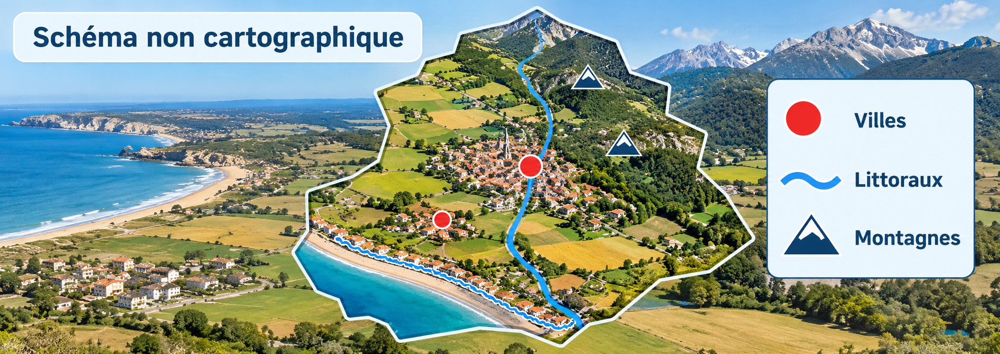
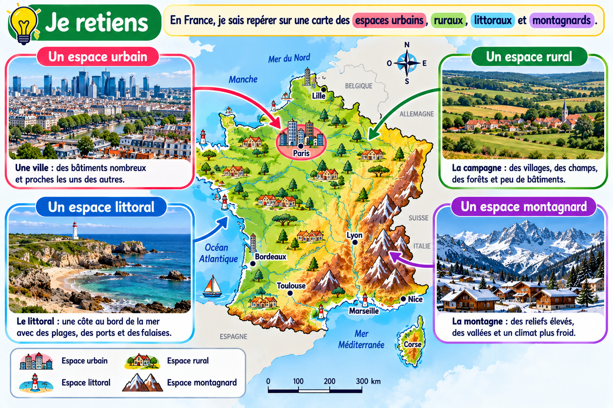

Localiser les principaux types d’espaces étudiés en France
Sur une carte de France, on peut situer les grands types d’espaces étudiés : urbains, ruraux, littoraux et montagnards.
Repérer villes, campagnes, littoraux et montagnes

Schéma pédagogique illustratif : il ne remplace pas une carte géographique de France.
1. Lire une carte
Je repère d’abord le titre, l’orientation et la légende. Je distingue ce qui est représenté par un symbole et ce qui est nommé.
2. Situer quelques exemples
Paris est une grande ville ; les côtes de l’Atlantique et de la Méditerranée sont des littoraux ; les Alpes et les Pyrénées sont des espaces montagnards.
3. Ne pas tout mélanger
Une carte schématique aide à retenir des catégories d’espaces. Pour placer précisément un lieu, j’utilise une vraie carte de France avec sa légende.
